d3905f6d3c31af4cdf5d47d3e6380179c5fd2c8f55e489648d140783b06a0d3b:p0309:l0008:question
PDF page 309
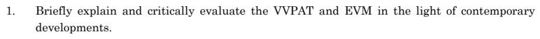
1. Briefly explain and critically evaluate the VVPAT and EVM in the light of contemporary developments.
human_review_required
Deterministic sample of 30 of 1389 proposals across year labels and formats. Full queue: review_queue.jsonl. Source crops support review; nothing is adjudicated.
PDF page 309

1. Briefly explain and critically evaluate the VVPAT and EVM in the light of contemporary developments.
human_review_required
PDF page 312
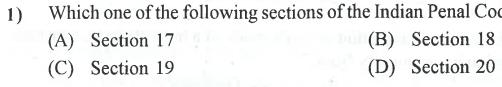
1) one (A) Section 17 (B) Section 18 (C) Section 19 (D) Section 20
human_review_required, source_page_issue
PDF page 321
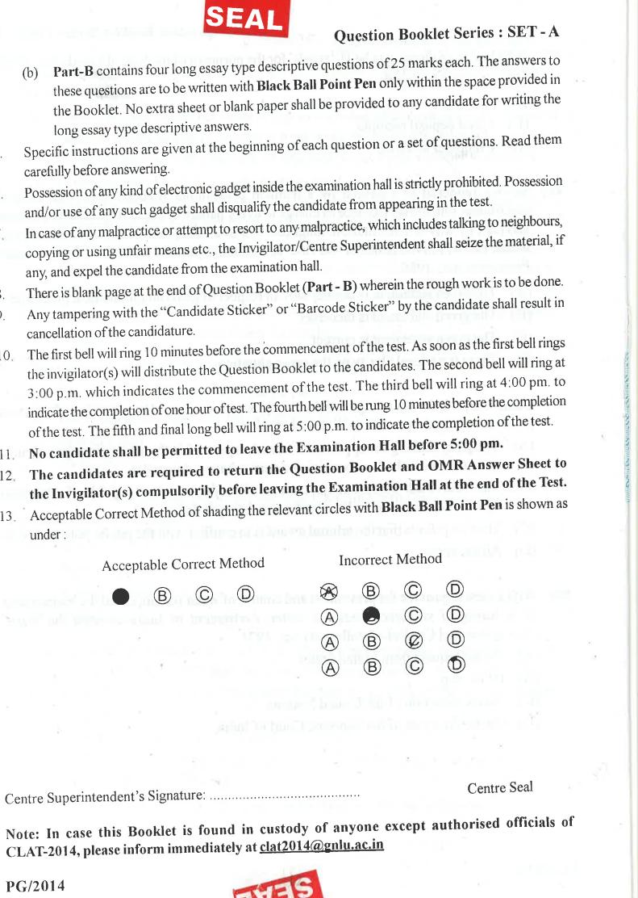
PDF page 322
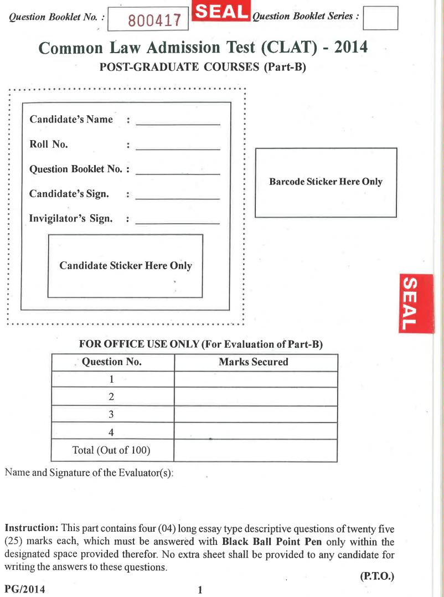
0... SEAL Booklet Series SET-A Question : questions of 25 marks each. The answers to long descriptive (b) Part-B contains four essay type only within the provided in written with Black Ball Point Pen space these questions to be are candidate for writing the blank shall be provided to any the Booklet. No extra sheet or paper long type descriptive answers. essay the beginning of each question or Specific instructions given at are carefully before answering. hall is strictly prohibited. Possession electronic gadget inside the examination Possession of kind of any candidate from appearing in the test. such gadget shall disqualify the and/or of any use talking neighbours, malpractice, which includes to of malpractice attempt to resort to any Incase any or shall seize the material, if unfair Invigilator/Centre Superintendent using etc., the copying or means candidate from the examination hall. and expel the any, wherein the rough work is to be done. Question Booklet (Part B) There is blank at the end of - page the candidate shall result in Sticker” “Barcode Sticker” by tampering with the “Candidate or Any of questions. Read them a set cancellation of the candidature. As the first bell rings before the commencement of the test. soonas The first bell will ring 10 minutes candidates. The second bell will ring at the Question Booklet to the the invigilator(s) will distribute The third bell will ring at 4:00 pm. to the commencement of the test. 3:00 which indicates p.m. before the completion fourth bell will be 10 minutes completion of hour of test. The rung indicate the one long indicate the completion of the test. The and final bell will ring at 5:00 p.m. to of the test. fifth Examination Hall before 5:00 pm. shall be permitted to leave the No candidate Booklet and OMR Answer Sheet to required return the Question to s are The candidate Hall at the end of the Test. n leaving the Examinatio Invigilator(s) compulsorily before the with Black Ball Point Pen is shown as of shading the relevant circles Acceptable Correct Method under : Incorrect Method Acceptable Correct Method ® © ©O @® ® Qe ©@@s® O®OO CRORES) Centre Seal authorised officials of found in custody of anyone except In this Booklet is Note: case clat2014@gnlu.ac.in CLAT-2014, please inform immediately at PG/2014 STAR, RATT NSS (WUE iit) ay S EA L Question Booklet No. 8004 1 7 Question Booklet Series : Common Law Admission Test (CLAT) 2014 - POST-GRADUATE COURSES (Part-B) Pa ee Candidate’s Name Roll No. Question Booklet No. : Barcode Sticker Here Only Candidate’s Sign. Invigilator’s Sign. Candidate Sticker Here Only ee FOR OFFICE USE ONLY (For Evaluation of Part-B) Question No. Marks Secured - 1 2 3 4 Total (Out of 100) Name and Signature of the Evaluator(s): Instruction: This part contains four (04) long type descriptive questions of twenty five essay (25) marks each, which must be answered with Black Ball Point Pen only within the designated provided therefor. No extra sheet shall be provided to candidate for space any writing the answers to these questions. (P.T.O.) PG/2014 1 —eeEeEeEEeee——_EEeEeE=EeeeEeEeEeEeEeEeeeee EEE LE
human_review_required, option_labels_incomplete_or_duplicate, number_sequence_gap_or_reset, source_page_issue
PDF page 339
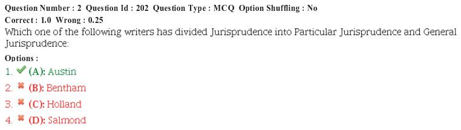
Question Number : 2 Question Id : 202 Question Type: MCQ Option Shuffling : No Correct : 1.0 Wrong : 0.25 Which one of the following writers has divided Jurisprudence into Particular Jurisprudence and General Jurisprudence: Options : 1. (Ay: Austin 2, * (B): Bentham 3. * (C): Holland 4, ® (D): Salmond
human_review_required, source_page_issue
PDF page 371
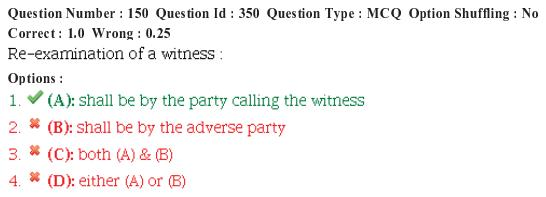
Question Number : 150 Question Id : 350 Question Type: MCQ Option Shuffling : No Correct : 1.0 Wrong : 0.25 Re-examination of a witness : Options : 1. # (A): shall be by the calling the witness party 2. ® (B}: shall be by the adverse party 3. ® (C): both (4) 2 8) 4. ® (D): either (4) B) or
human_review_required, number_sequence_gap_or_reset, source_page_issue
PDF page 372
1. P.A. Inamdar v. State of Maharashtra (2005)
human_review_required, option_labels_incomplete_or_duplicate
PDF page 380
3. M. C. Mehta v. UOI
human_review_required, option_labels_incomplete_or_duplicate, number_sequence_gap_or_reset
PDF page 401
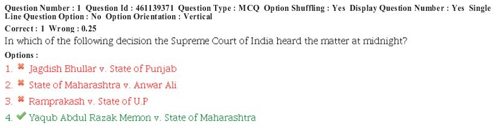
Question Number : 1 Question Id : 461139371 Question Type: MCQ Option Shuffling : Yes Display Question Number : Yes Single Line Question Option : No Option Orientation : Vertical Correct : 1 Wrong : 0.25 In which of the following decision the Supreme Court of India heard the matter at midnight? Options : 1. ® Jagdish Bhullar State of Punjab v. 2. * State of Maharashtra Anwar Ali v. 2. ® Ramprakash State of U.P vy. 4. Yaqub Abdul Razak Memon y¥. State of Maharashtra
human_review_required, option_labels_incomplete_or_duplicate, source_page_issue
PDF page 432
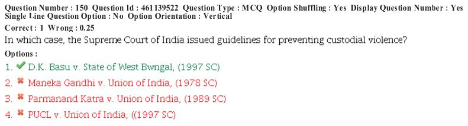
Question Number : 150 Question Id : 461139522 Question Type : MCQ Option Shuffling : Yes Display Question Number : Yes Single Line Question Option : No Option Orientation : Vertical Correct : 1 Wrong : 0.25 In which case, the Supreme Court of India issued guidelines for preventing custodial violence? Options : 1.“ DE. Basu State of West Bwrgal, (Loa? 30} y¥. 2. ® Maneka Gandhi Union of India, (1978 5C) v. 3. ® Parmanand Katra Union of India, (1989 5C) v. ® of India, 4. PUCL ¥. Union (1997 5C)
human_review_required, source_page_issue
PDF page 433
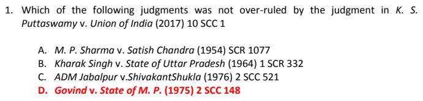
1. Which of the following judgments was not over-ruled by the judgment in K. S. Puttaswamy v. Union of India (2017) 10 SCC 1 A. M. P. Sharma v. Satish Chandra (1954) SCR 1077 B. Kharak Singh v. State of Uttar Pradesh (1964) 1 SCR 332 C. ADM Jabalpur v.ShivakantShukla (1976) 2 SCC 521 D. Govind v. State of M. P. (1975) 2 SCC 148
human_review_required
PDF page 465
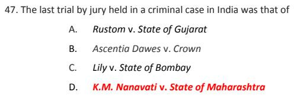
47. The last trial by jury held in a criminal case in India was that of A. Rustom v. State of Gujarat B. Ascentia Dawes v. Crown C. Lily v. State of Bombay D. K.M. Nanavati v. State of Maharashtra
human_review_required
PDF page 295
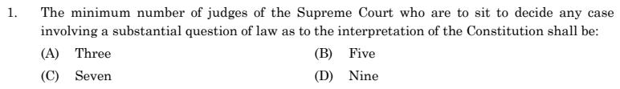
1. The minimum number of judges of the Supreme Court who are to sit to decide any case involving a substantial question of law as to the interpretation of the Constitution shall be: (A) Three (B) Five (C) Seven (D) Nine
human_review_required
PDF page 309
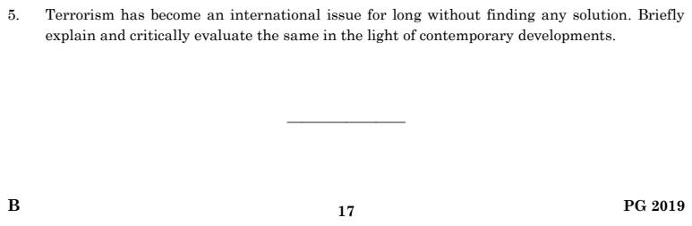
5. Terrorism has become an international issue for long without finding any solution. Briefly explain and critically evaluate the same in the light of contemporary developments. ———————— B PG 2019 17
human_review_required
PDF page 258
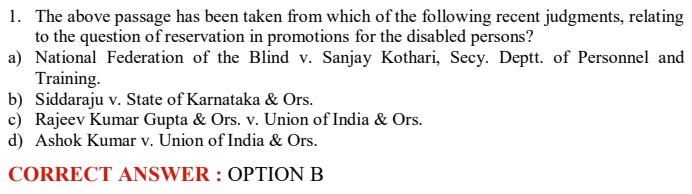
1. The above passage has been taken from which of the following recent judgments, relating to the question of reservation in promotions for the disabled persons? a) National Federation of the Blind v. Sanjay Kothari, Secy. Deptt. of Personnel and Training. b) Siddaraju v. State of Karnataka & Ors. c) Rajeev Kumar Gupta & Ors. v. Union of India & Ors. d) Ashok Kumar v. Union of India & Ors. CORRECT ANSWER : OPTION B
human_review_required, inline_answer_present_unverified, passage_link_unresolved
PDF page 292
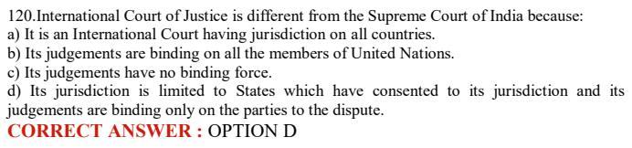
120.International Court of Justice is different from the Supreme Court of India because: a) It is an International Court having jurisdiction on all countries. b) Its judgements are binding on all the members of United Nations. c) Its judgements have no binding force. d) Its jurisdiction is limited to States which have consented to its jurisdiction and its judgements are binding only on the parties to the dispute. CORRECT ANSWER : OPTION D
human_review_required, inline_answer_present_unverified, passage_link_unresolved
PDF page 228
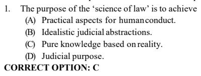
1. The purpose of the „science of law‟ is to achieve (A) Practical aspects for human conduct. (B) Idealistic judicial abstractions. (C) Pure knowledge based on reality. (D) Judicial purpose. CORRECT OPTION: C
human_review_required, inline_answer_present_unverified, passage_link_unresolved
PDF page 257
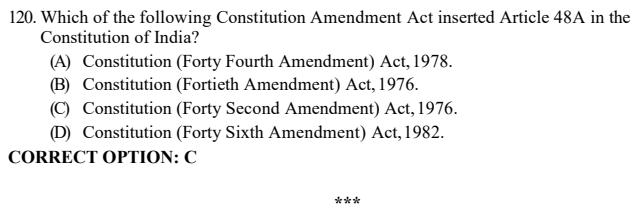
120. Which of the following Constitution Amendment Act inserted Article 48A in the Constitution of India? (A) Constitution (Forty Fourth Amendment) Act, 1978. (B) Constitution (Fortieth Amendment) Act, 1976. (C) Constitution (Forty Second Amendment) Act, 1976. (D) Constitution (Forty Sixth Amendment) Act, 1982. CORRECT OPTION: C ***
human_review_required, inline_answer_present_unverified, passage_link_unresolved
PDF page 192
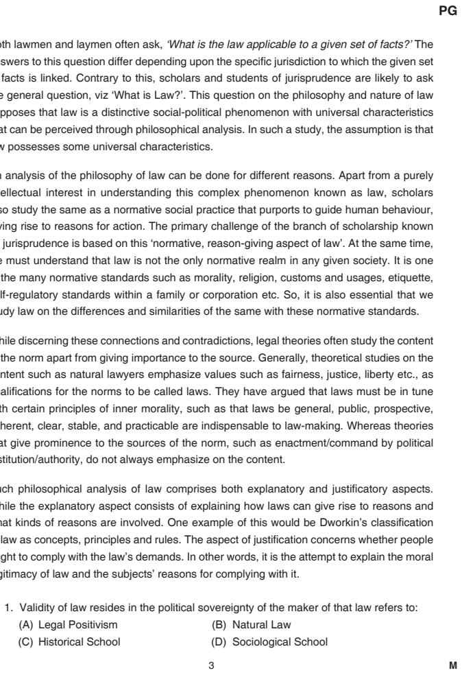
PDF page 193
1. Validity of law resides in the political sovereignty of the maker of that law refers to: (A) Legal Positivism (B) Natural Law (C) Historical School (D) Sociological School 3 PG PG
human_review_required, source_page_issue, passage_link_unresolved
PDF page 221
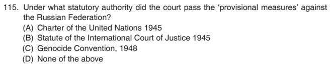
PDF page 222
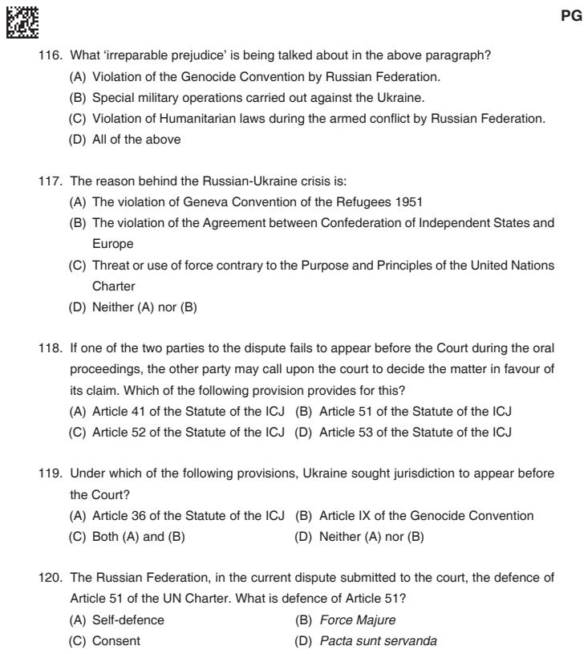
115. Under what statutory authority did the court pass the ‘provisional measures’ against the Russian Federation? (A) Charter of the United Nations 1945 (B) Statute of the International Court of Justice 1945 (C) Genocide Convention, 1948 (D) None of the above af 116. 117. 118. 119. 120. PG What ‘irreparable prejudice’ is being talked about in the above paragraph? (A) Violation of the Genocide Convention by Russian Federation. B) Special military operations carried out against the Ukraine. D) All of the above (B) (C) Violation of Humanitarian laws during the armed conflict by Russian Federation. (D) The reason behind the Russian-Ukraine crisis is: (A) The violation of Geneva Convention of the Refugees 1951 (B) The violation of the Agreement between Confederation of Independent States and Europe (C) Threat or use of force contrary to the Purpose and Principles of the United Nations Charter (D) Neither (A) nor (B) If one of the two parties to the dispute fails to appear before the Court during the oral proceedings, the other party may call upon the court to decide the matter in favour of its claim. Which of the following provision provides for this? (A) Article 41 of the Statute of the ICJ (B) Article 51 of the Statute of the ICJ (C) Article 52 of the Statute of the ICJ (D) Article 53 of the Statute of the ICJ Under which of the following provisions, Ukraine sought jurisdiction to appear before the Court? (A) Article 36 of the Statute of the ICJ (B) Article IX of the Genocide Convention (C) Both (A) and (B) (D) Neither (A) nor (B) The Russian Federation, in the current dispute submitted to the court, the defence of Article 51 of the UN Charter. What is defence of Article 51? (A) Self-defence (B) Force Majure (C) Consent (D) Pacta sunt servanda
human_review_required, option_labels_incomplete_or_duplicate, source_page_issue
PDF page 147
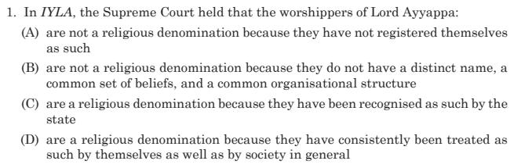
1. in IYLA, the Supreme Court held that the worshippers of Lord Ayyappa: (A) are not a religious denomination because they have not registered themselves as such (b) are not a religious denomination because they do not have a distinct name, a common set of beliefs, and a common organisational structure (C) are a religious denomination because they have been recognised as such by the state (d) are a religious denomination because they have consistently been treated as such by themselves as well as by society in general
human_review_required
PDF page 185
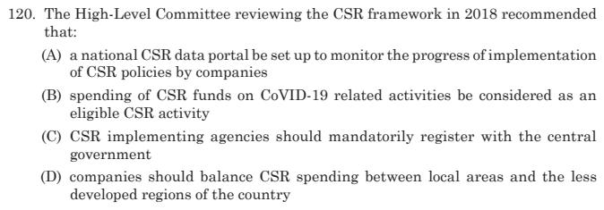
120. the High-Level Committee reviewing the CSr framework in 2018 recommended that: (A) a national CSr data portal be set up to monitor the progress of implementation of CSr policies by companies (b) spending of CSr funds on CoVid-19 related activities be considered as an eligible CSr activity (C) CSr implementing agencies should mandatorily register with the central government (d) companies should balance CSr spending between local areas and the less developed regions of the country
human_review_required
PDF page 99
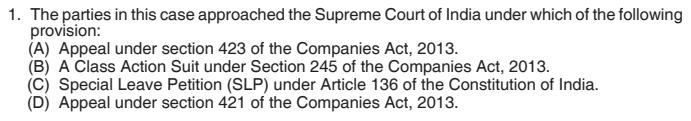
1. the parties in this case approached the Supreme Court of india under which of the following provision: (a) appeal under section 423 of the Companies act, 2013. (B) a Class action Suit under Section 245 of the Companies act, 2013. (C) Special leave Petition (SlP) under article 136 of the Constitution of india. (d) appeal under section 421 of the Companies act, 2013.
human_review_required
PDF page 137
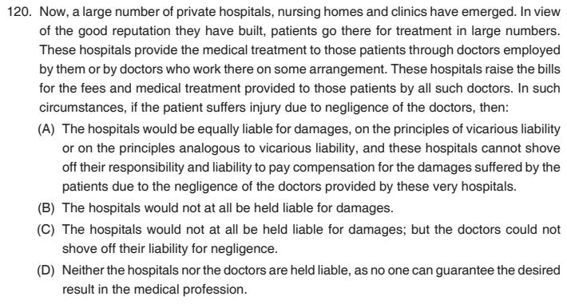
120. now, a large number of private hospitals, nursing homes and clinics have emerged. in view of the good reputation they have built, patients go there for treatment in large numbers. these hospitals provide the medical treatment to those patients through doctors employed by them or by doctors who work there on some arrangement. these hospitals raise the bills for the fees and medical treatment provided to those patients by all such doctors. in such circumstances, if the patient suffers injury due to negligence of the doctors, then: (a) the hospitals would be equally liable for damages, on the principles of vicarious liability or on the principles analogous to vicarious liability, and these hospitals cannot shove off their responsibility and liability to pay compensation for the damages suffered by the patients due to the negligence of the doctors provided by these very hospitals. (B) the hospitals would not at all be held liable for damages. (C) the hospitals would not at all be held liable for damages; but the doctors could not shove off their liability for negligence. (d) neither the hospitals nor the doctors are held liable, as no one can guarantee the desired result in the medical profession.
human_review_required, passage_link_unresolved
PDF page 53
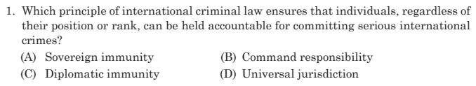
1. Which principle of international criminal law ensures that individuals, regardless of their position or rank, can be held accountable for committing serious international crimes? (A) Sovereign immunity (B) Command responsibility (C) Diplomatic immunity (D) Universal jurisdiction
human_review_required
PDF page 91
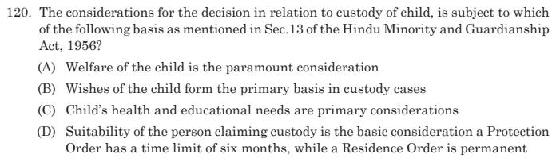
120. The considerations for the decision in relation to custody of child, is subject to which of the following basis as mentioned in Sec.13 of the Hindu Minority and Guardianship Act, 1956? (A) Welfare of the child is the paramount consideration (B) Wishes of the child form the primary basis in custody cases (C) Child’s health and educational needs are primary considerations (D) Suitability of the person claiming custody is the basic consideration a Protection Order has a time limit of six months, while a Residence Order is permanent
human_review_required
PDF page 3

1. According to the text, what did Bentham consider the fundamental unit of human action, replacing concepts like natural rights? (A) Liberty (B) Self-determination (C) Utility (D) Happiness for the greatest number
human_review_required
PDF page 46
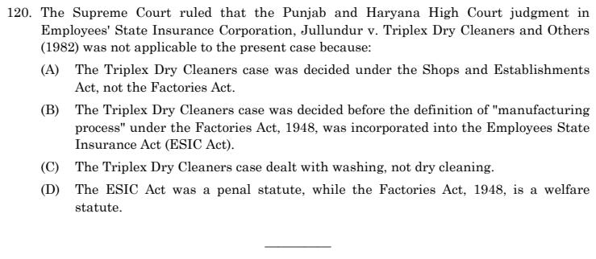
120. The Supreme Court ruled that the Punjab and Haryana High Court judgment in Employees' State Insurance Corporation, Jullundur v. Triplex Dry Cleaners and Others (1982) was not applicable to the present case because: (A) The Triplex Dry Cleaners case was decided under the Shops and Establishments Act, not the Factories Act. (B) The Triplex Dry Cleaners case was decided before the definition of "manufacturing process" under the Factories Act, 1948, was incorporated into the Employees State Insurance Act (ESIC Act). (C) The Triplex Dry Cleaners case dealt with washing, not dry cleaning. (D) The ESIC Act was a penal statute, while the Factories Act, 1948, is a welfare statute. —————
human_review_required
PDF page 4

2. Which of the following is identified as Bentham's fundamental axiom underlying utilitarianism? (A) Ethics must be empirical, quantifiable, and reproducible. (B) Utility must be used to reject religious authority. (C) All social morals and government legislation should aim for producing the greatest happiness for the greatest number of people. (D) The character of the actor is the most important aspect of an ethical act.
human_review_required
PDF page 4
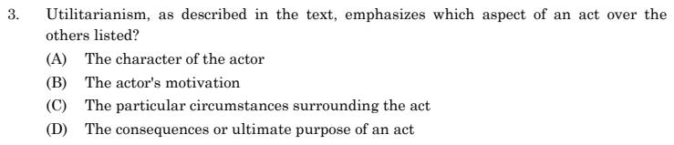
3. Utilitarianism, as described in the text, emphasizes which aspect of an act over the others listed? (A) The character of the actor (B) The actor's motivation (C) The particular circumstances surrounding the act (D) The consequences or ultimate purpose of an act
human_review_required
PDF page 4
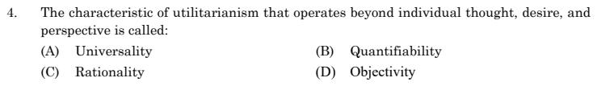
4. The characteristic of utilitarianism that operates beyond individual thought, desire, and perspective is called: (A) Universality (B) Quantifiability (C) Rationality (D) Objectivity
human_review_required